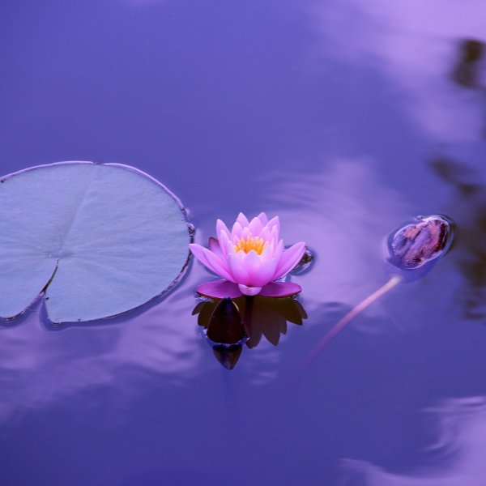

Stil water, veel leven
Van een kuip op het terras tot een vijver van honderd vierkante meter.
Onze diensten
Aanleg
vanaf € 1 200
Uitgraven, folie leggen, beplanten en opstarten.
Onderhoud
€ 85 per beurt
Twee keer per jaar snoeien, baggeren en filters nakijken.
Planten
vanaf € 6
Zuurstofplanten, oeverplanten en zeventien soorten lelie.
Goed om weten
Een vijver aanleggen doe je best in het voorjaar: het water is dan koud genoeg om algen tegen te houden en de planten hebben een heel seizoen om te wortelen.
Wij werken zonder pompen waar het kan. Een goed beplante vijver houdt zichzelf helder, zeker als er genoeg schaduw op het water valt.